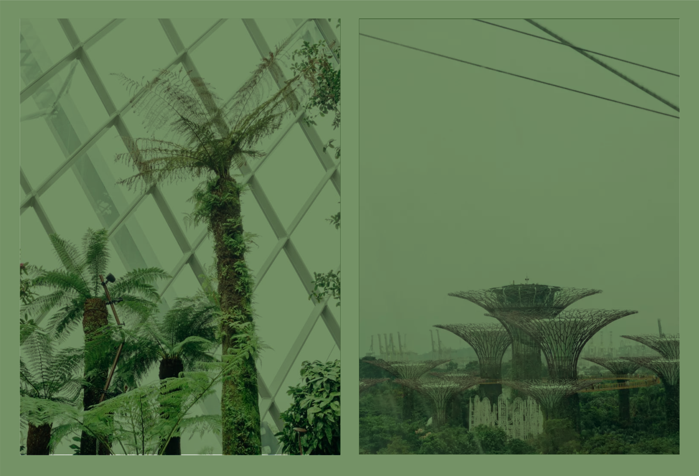

“They paved paradise and put up a parking lot,” sings Joni Mitchell on “Big Yellow Taxi,” a song inspired by her visit to a developing Hawai‘i in 1970. Almost 50 years later, the battle between green space and gray concrete rages on, with only intermittent signs of progress. Denmark’s capital, Copenhagen, wants to be the first city to be carbon-neutral by 2025, which they’re making steps toward by switching to renewable energy sources and prioritizing cycling and public transport over cars. While in Singapore, there’s a big focus on “greening” the city, the most visible example of which is the Gardens by the Bay, an extensive network of otherworldly gardens. Commissioned by the government but run by an independent organization, it was built using a mix of high-tech and sustainable methods.
In the five years since they’ve opened, the gardens have become one of Singapore’s biggest tourist attractions. They’re home to almost 1.5 million plants of over 19,000 species and varieties, but is this engineered take on paradise actually good for the broader environment?
The FADER spoke with Dr. Matthias Roth, an urban climatologist at the National University of Singapore, to find out how we should be designing cities to ensure the future of the planet.
In the five years since they’ve opened, the gardens have become one of Singapore’s biggest tourist attractions. They’re home to almost 1.5 million plants of over 19,000 species and varieties, but is this engineered take on paradise actually good for the broader environment?
The FADER spoke with Dr. Matthias Roth, an urban climatologist at the National University of Singapore, to find out how we should be designing cities to ensure the future of the planet.

Could you tell me a bit about your job?
Dr. Matthias Roth:
I’m researching the impact cities have on the local climate. One of the applications of this work is in terms of the so-called “urban heat island.” Cities are known to be warmer than their undeveloped surroundings. This is because of the built form of the city, the mass of concrete, the absence of vegetation, and because of human activity, which uses energy thereby generating heat, which is released into the atmosphere. I’m also looking at air pollution issues: how do cities affect the local wind flow and how does this affect the diffusion of pollutants?
There are different types of pollution. One is the pollution that directly affects the air quality and which is the pollution from human-related activities, for example from car traffic, from industries, etc. Then there’s emission of carbon dioxide which affects the global climate. Whenever we produce air pollutants through the burning of fossil fuels, which contributes to bad air quality, we also produce CO2. The two go hand-in-hand in many ways.What impact are these two types of pollutants having on Singapore?
Climate change is real — Singapore will be affected by climate change because of sea level rise and increasing temperatures, which will worsen outdoor thermal comfort conditions in this tropical island nation. In terms of air quality in Singapore, it’s probably as good or as bad as in any other big and modern city. The government has been monitoring the main air pollutants for a long time and emission controls and regulations are in place. However, there’s this tension between economic development and a green/clean environment because Singapore wants to have both. This is not easy to achieve, given dense road traffic, vibrant construction activity, and the type of industries which underpin the local economy. The latter include a huge port with the associated heavy ship traffic and a significant petrochemical industry that includes oil refineries. These are all activities and industries which emit a lot of air pollutants, including CO2.
It sounds like a catch-22.
Singapore is aware of this and has been trying to balance these two opposing aspects. What is perhaps unique in Singapore’s context is the speed with which ideas are implemented and carried out once the government has decided to move ahead. When I moved to Singapore 18 years ago, environmental sustainability and climate change were not really on the radar of the government. This has substantially changed over time. Nowadays, “clean and green city” or “liveable and sustainable city” are commonly used phrases here in Singapore, and much revolves around becoming a “city in a garden,” “more sustainable,” or “eco-friendly.” By extension this should include reducing the carbon footprint, but Singapore’s recent Paris climate target allows its own emissions to increase substantially before finally reaching a peak around 2030. This paradox demonstrates the tension between the wish for economic growth and development with all its known detrimental environmental consequences, which at the same time shall occur in an environmentally sustainable fashion.
What were your thoughts about Gardens by the Bay when it was first announced?
Another big tourist attraction. It obviously feeds into the theme of going green and being sustainable. And underlying the concept of Gardens by the Bay are the principles of environmental sustainability. I regularly take visitors to the Gardens by the Bay and they are mostly impressed. I am yet undecided about its environmental value because, in the end, it’s an engineered product. There is much natural heritage in Singapore which could be preserved or invested in rather than building a new “green theme park,” which in the end is artificial, managed, and needs resources to be run. It would be interesting to know to what extent Gardens by the Bay has achieved its goal of achieving sustainable energy and water cycles. What I like, however, is its location next to the coast in the vicinity of the Central Business District. This is prime real estate, but a decision was taken to set this large piece of land aside to build a substantial park accessible to the public, rather than building another shopping center or high-rise developments blocking the cooling sea breeze.

One point about human-made climate change is that most anthropogenic emissions of CO2 arise in cities. This is where most people live. This is where much of the industrial activity takes place. Concentrating efforts to reduce emissions of greenhouse gases in cities can therefore be quite effective in curbing global emissions. Some national governments may not think climate change is an important issue and are unwilling to do much about it. The fact, however, that a lot of major cities have come together to counter this trend, with their own stringent greenhouse gas emission reduction targets tied to concrete local actions, can be viewed as a hopeful sign.
Some of these efforts involve reducing reliance on cars propelled by fossil fuels, looking for ways to preserve green spaces, and adopting climate-sensitive building designs, including re-evaluating the types of materials being used. There is much talk about green roofs and green walls — these are good interventions to cut down the energy consumption of individual buildings by adding a layer of insulation, but not as measures to reduce the local or regional outdoor temperature as well. Here in Singapore where the background climate is already very warm and humid, any extra heat will quickly adversely affect the outdoor thermal comfort. Temperatures in some cities may possibly even exceed a threshold for human adaptability when coupled with projected future global warming. Higher ambient temperatures will also increase the use of indoor air conditioning, which is prevalent throughout Singapore, which is sometimes called an “air-conditioned nation.”
“There’s this tension
between economic development
and a green/clean environment
because Singapore wants
to have both.”
What can cities do to reduce their contribution to climate change?
One point about human-made climate change is that most anthropogenic emissions of CO2 arise in cities. This is where most people live. This is where much of the industrial activity takes place. Concentrating efforts to reduce emissions of greenhouse gases in cities can therefore be quite effective in curbing global emissions. Some national governments may not think climate change is an important issue and are unwilling to do much about it. The fact, however, that a lot of major cities have come together to counter this trend, with their own stringent greenhouse gas emission reduction targets tied to concrete local actions, can be viewed as a hopeful sign.
Some of these efforts involve reducing reliance on cars propelled by fossil fuels, looking for ways to preserve green spaces, and adopting climate-sensitive building designs, including re-evaluating the types of materials being used. There is much talk about green roofs and green walls — these are good interventions to cut down the energy consumption of individual buildings by adding a layer of insulation, but not as measures to reduce the local or regional outdoor temperature as well. Here in Singapore where the background climate is already very warm and humid, any extra heat will quickly adversely affect the outdoor thermal comfort. Temperatures in some cities may possibly even exceed a threshold for human adaptability when coupled with projected future global warming. Higher ambient temperatures will also increase the use of indoor air conditioning, which is prevalent throughout Singapore, which is sometimes called an “air-conditioned nation.”